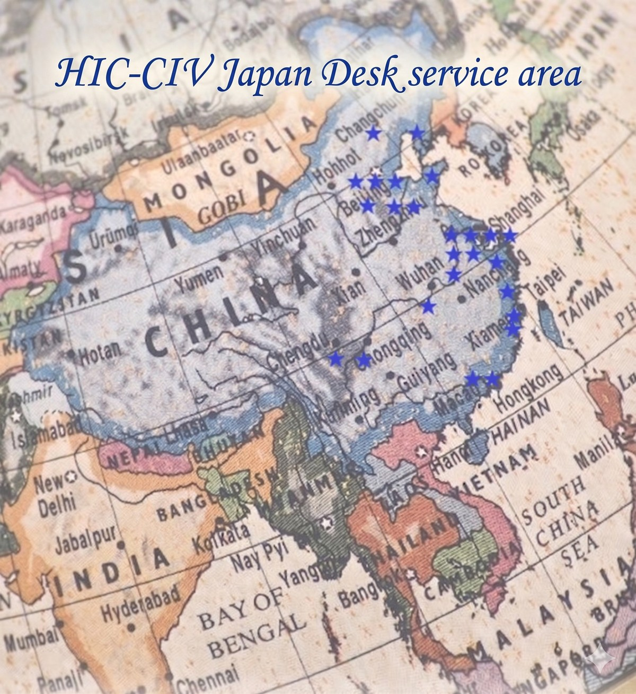
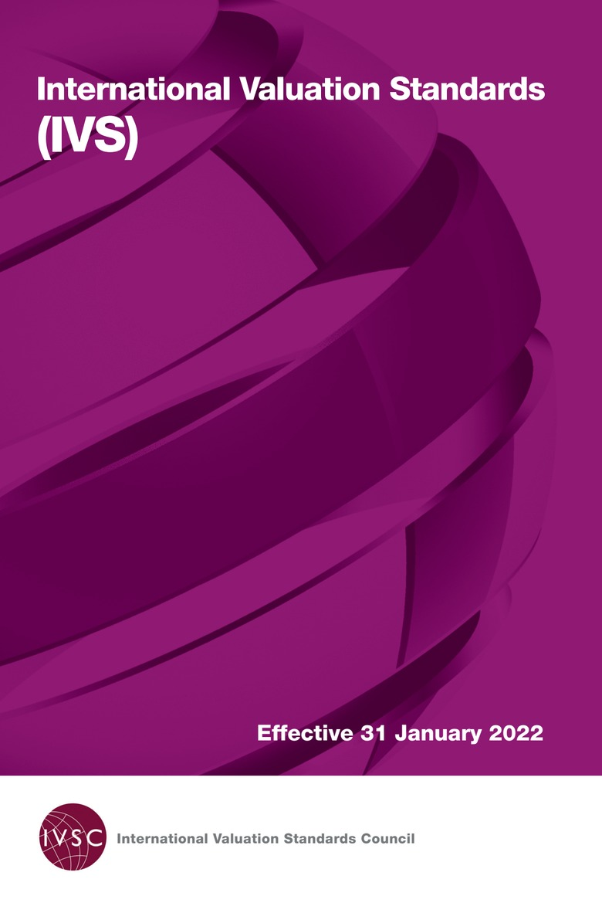

Case 01
政府収用・工場移転支援
現在の工場に収用リスクはあるか？ 補償額を算定したが妥当か？ 当局への提示に向けた精緻な算定と交渉を支援します。
Strengths
01
中国で唯一、日系企業向け資産評価サービスを直接提供する資産評価事務所。中抜きのない合法の体制で、完全日本語対応いたします。
02
中国最大級の資産評価事務所に所属。政府機関との強固なネットワークを有し、補助金や評価実務での連携が可能です。
03
中国全土の評価・コンサルティング依頼に即時に対応できる体制を構築。各地の主要都市に拠点を構えています。
About
当社のポジション
HIC/CVIは各地方の有力鑑定業者によって設立された持株会社であり、各専門分野のトップクラスの人材を擁しています。またHICは、財団法人日本不動産研究所（日本最大の不動産鑑定・コンサルティング機関）の中国での唯一の提携先です。
2009
創立（2009年5月）
30
中国全土の拠点数
400名
連結職員数（約）
Coverage
全30拠点の強固なネットワークにより、中国各地の案件へ即時に対応します。
華北エリア
北京(3)、天津(2)、瀋陽、大連、青島、石家庄、済南
華東エリア
上海(2)、南京(2)、蘇州、無錫、杭州、寧波
華南エリア
福州、厦門、深セン、広州
華中エリア
武漢、成都、重慶、合肥
西北エリア
ウルムチ、洛陽、太原

Expertise


国際評価基準（IVS）への対応と浸透
2021年7月30日、国際評価基準審議会が最新版「国際評価基準」（IVS）を発表。今後、これに基づく評価実務がより一層浸透していくと考えられます。
HIC/CVIの優位性
HIC/CVIは董事長自らが国際基準の翻訳・出版に関与し、国内外の評価基準および国有資産管理業務に精通。監査法人の要求水準を満たす、国際基準に準拠した最高品質のレポートを提供します。
Government Relations
HICは政府各部門と強い連携を有し、業際業務についても熟知しています。
Services
取引・会計・税務など、中国案件の実務局面に応じた評価サービスを提供しています。
Case Studies
Case 01
現在の工場に収用リスクはあるか？ 補償額を算定したが妥当か？ 当局への提示に向けた精緻な算定と交渉を支援します。
Case 02
動産・不動産の処分をどうするか？ 合理的な価格で買い手がつくか？ 名義書き換えがスケジュールに与える影響まで詳細に検討します。
Case 03
当グループの評価士が「専門家証人」として法廷に出廷し、訴訟紛争に直接関与。客観的な評価とエビデンスにより正当性を立証します。
Case 04
中国IFRS（企業会計準則）及び日本の連結会計の双方で採用可能な形式で評価を実施。評価結論の合理性に責任を負います。
Independence
資産・負債の公正価値の変化は財務に直結します。適切な会計処理のため、評価ニーズが生じます。
監査法人からの依頼要求
監査法人が評価機関への依頼を求めるのは、その評価が「中立」であり、かつ会計・監査基準を熟知したプロフェッショナルの手によるものである必要があるからです。
Common Pitfalls
中国案件の実務では、次のような問題が起きやすいのが実情です。
合弁相手が手配した評価会社による数値が公平だと思っていたが、実際には不利な条件で解消することになった。税法上のリスクも見落としていた。
工場移転で政府提示の評価額を鵜呑みにした。反論や交渉の手段を持たなかったため、取得できたはずの補助金を大幅にロスした。
土壌汚染リスクを確認せずに土地を取得。撤退時に多額の除染費用が発生。初期段階での調査欠如が多額の損失を招いた。
Compliance
| カテゴリー | 法的定義 / 範囲 | 代表例 |
|---|---|---|
| 1. 不動産 | 土地、建物など土地に付着する定着物 | 住宅、商業、工業用不動産、土地使用権 |
| 2. 動産 | 移動しても価値が変わらない財産 | 機械設備、車両、船舶、在庫、原材料 |
| 3. 無形資産 | 実体を持たず、継続的に経済利益をもたらす資源 | 特許権、商標権、のれん、顧客関係 |
| 4. 企業価値 | 企業全体、株主全持分または一部の価値評価 | 株主持分価値、企業価値の全体評価 |
| 5. 資産損失 | 自然災害、事故等で生じた価値減少 | 火災、洪水、事故による財産損失の評価 |
| 6. その他権益 | 貨幣評価可能な各種権利（排出権、鉱業権等） | 債権、契約権利、炭素排出権、海域使用権 |
Compliance
中国での評価報告書は、認可を受けた会社のみ発行可能です。日系コンサルによる中抜き構造は違法リスクを伴いますが、当Japan DeskはHIC/CVIに直接帰属しており、合法かつ透明な体制を構築しています。
People

シニアパートナー
中国土地評価師、英国王立勅許鑑定士協会会員。財団法人日本不動産研究所 中華圏統括責任者など歴任、日中両国の不動産業界で25年以上のキャリアを持つ。翻訳書：『図解 不動産証券化とJ-REITがわかる本』（中信出版社）。
シニアパートナー
日本で主に商業空間のプランニングから設計・施工に従事。商業不動産商品化業務を経て、上海愛思考建築装飾工程有限公司董事総経理（現任）。不動産活用・事業空間の構築ならびにコンサルティング、プランニング等幅広く対応。

シニアパートナー
日本国税理士、日本証券アナリスト協会認定アナリスト。中国を中心に日系現地法人のアウトソーシングを提供するアラスターシーを運営中。
Contact
中国における資産評価・企業価値評価に関するご相談を承っております。案件内容や検討段階に応じて、HIC/CVI Japan Deskの適切なメンバーが対応いたします。初期的なご相談段階でも構いません。まずはお気軽にお問い合わせください。